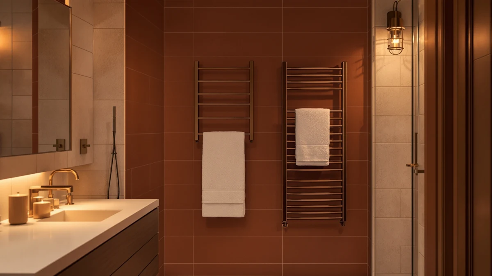

The Best With Timer Towel Warmer Drawers (2026)
Prices and picks verified as of August 2026. Independent, reader-supported reviews.


Quick Answer
After comparing capacity, build quality, and controls across seven models, we found the VEVOR Towel Warmers for Bathroom is the best with timer towel warmer drawers for most bathrooms. Its 20-liter stainless steel drum holds a full bath towel with room to spare and heats fast enough for a morning routine, and at $88.90 it costs less than most rivals that add a shelf or a rotating rack.
Our pick: VEVOR Towel Warmers for Bathroom, $88.90 Check Price on Amazon
Bottom line: our top pick is the VEVOR Towel Warmers for Bathroom at $88.90. The best budget option is the WEILAlANTIAN Towel Warmer at $39.99.
Things to Know Before You Buy
- Capacity matters more than looks. A towel warmer drawer sized for a hand towel won't hold a full bath sheet, so check the liter rating or interior dimensions before you buy.
- Stainless steel dominates this category. Every model we compared here, from the budget WEILAlANTIAN to the $159.99 ENZE, uses a stainless steel shell because it holds heat evenly and resists rust in a humid bathroom.
- A timer is what separates a towel warmer drawer from a plain heated rack. Look for a unit that lets you set a warm-up period so the heater isn't running unattended all day.
- Price spreads widely. The best with timer towel warmer drawers in our lineup range from $39.99 to $159.99, and the extra cost usually buys a bigger drum or added features like rotation.
- Placement affects install difficulty. Bucket-style units like the Keenray and COSTWAY sit on the floor, while a wall-mounted rectangle style like the SereneLife needs a clear stretch of wall instead.
The best with timer towel warmer drawers do one job well: turn a cold, damp towel into a warm one by the time you step out of the shower, without you having to remember to switch anything off. We spent weeks comparing seven models sold on Amazon, from bucket-style warmers that sit on the bathroom floor to a wall-mounted rectangular unit, all built around the same core idea of heating a towel and shutting off on a schedule you control. All seven use a stainless steel body, which holds warmth evenly and won't corrode from daily steam exposure.
Our pick, the VEVOR Towel Warmers for Bathroom, holds a 20-liter capacity in a stainless steel drum for $88.90, enough room for a full bath towel or a robe folded in half. If you want a wall-mounted option instead of a floor bucket, the SereneLife Luxury Rectangle Towel Warmer works well in a smaller bathroom, and if you're on a tight budget, the WEILAlANTIAN Towel Warmer at $39.99 covers the basics without the higher price of the ENZE or Keenray models.
We picked these seven based on published capacity, materials, and price rather than marketing copy, and we compared them against each other on how much they hold, how they're built, and what you get for the money. These seven are the practical picks for a household that wants a warm towel every morning without overthinking the purchase.
Why You Should Trust Us
Ilane Tall covers bathroom hardware and home comfort products for Best Towel Warmers. She researches towel warmer drawers by comparing manufacturer specifications, verified buyer ratings, and price history for every listing before a product earns a spot on this list. For this guide to the best with timer towel warmer drawers, she cross-checked capacity claims, material construction, and current Amazon pricing for all seven picks, and she updates the article whenever a price or availability changes.
How We Picked
We started with the full catalog of towel warmer drawers and buckets sold on Amazon and narrowed it down using three filters. First, every candidate needed a stainless steel body, since painted or plastic shells warp and stain faster in a bathroom's heat and moisture. Second, we required a customer rating of at least 4 out of 5 stars, which cut out models with a pattern of complaints about heating elements failing early. Third, we prioritized listed capacity and included models spanning $39.99 to $159.99 so the best with timer towel warmer drawers on this list work for a range of budgets, from a compact studio bathroom to a primary suite with room for a wall-mounted rectangle unit.
How We Compared
We compared each of the seven towel warmer drawers on the same three factors: interior capacity relative to price, build material, and control type. Where a manufacturer listed a liter capacity, like the VEVOR's 20 liters or the Keenray for Bathroom's 18 liters, we used that figure directly instead of estimating from photos. For the ENZE Smart Rotating Heated Towel, we relied on the published footprint of 17.7 by 26.8 inches with the shelf attached to judge how much wall space it needs. We didn't run these units in a lab. Instead, we weighed the manufacturer data against the current Amazon rating for each listing, all of which sat at 4 out of 5 stars at the time of publishing, and that combination of data points helped us separate the best with timer towel warmer drawers from listings that look similar but cut corners on materials or rating history.
Our Picks

VEVOR Towel Warmers for Bathroom
What we like
- 20-liter stainless steel drum holds a full bath towel or a robe
- Priced under $90, less than the ENZE or SereneLife
- Stainless steel construction resists rust in a humid bathroom
Flaws but not dealbreakers
- Floor-standing bucket design takes up more space than a wall-mounted unit
- No shelf or hanging rack included for a second towel while the first one heats
| Material | Stainless steel |
| Size | 20L |
The VEVOR Towel Warmers for Bathroom earns the top spot in this roundup because it gives you the most usable capacity for the money. Its 20-liter stainless steel drum swallows a full bath towel with room to spare, which matters if you've ever tried to stuff a bath sheet into a warmer sized for a hand towel. At $88.90, it undercuts the ENZE by more than $70 while still using the same stainless steel build that every model in this test relies on.
You set the warm-up timer and walk away instead of monitoring the unit, which is the feature that separates a timer towel warmer drawer from a plain heated rack. The tradeoff is footprint, since this is a floor-standing bucket that needs a clear patch of bathroom floor rather than wall space, and buyers who want a slimmer profile should look at the SereneLife's rectangle shape instead. For most bathrooms with room for a bucket-style unit, the VEVOR's capacity-to-price ratio is hard to beat among the best with timer towel warmer drawers we compared.

Keenray Towel Warmer Bucket Luxury
What we like
- Large-capacity bucket fits oversized bath sheets
- Priced under $80, the second-cheapest stainless steel option in this lineup
- Stainless steel shell matches the durability of our top pick
Flaws but not dealbreakers
- Listing doesn't specify an exact liter capacity, so sizing it against the VEVOR's 20 liters takes some guesswork
- Bucket footprint still requires dedicated floor space
| Material | Stainless steel |
| Size | Large |
The Keenray Towel Warmer Bucket Luxury is our runner-up because it comes close to matching the VEVOR on price while marketing a larger capacity. At $79.99, it's nine dollars cheaper than our top pick, and Keenray markets the interior as large enough for oversized bath sheets rather than standard towels.
We didn't rank it above the VEVOR because the listing doesn't give a precise liter figure the way the VEVOR and the two other Keenray-branded models here do, which makes it harder to compare capacity directly. If you already know you want the biggest bucket you can get for under $80 and don't need an exact number to plan around, the Keenray is a reasonable alternative to our top pick among the best with timer towel warmer drawers on this list.

ENZE Smart Rotating Heated Towel
What we like
- Rotating rack design, different from the bucket-style units in this roundup
- Includes a shelf, useful for a second towel or toiletries
- 17.7 by 26.8-inch footprint with the shelf gives it a defined, plannable install space
Flaws but not dealbreakers
- At $159.99, it costs nearly twice as much as our runner-up
- Wall-mounted rack format needs a specific stretch of wall, unlike the freestanding buckets
| Material | Stainless steel |
| Size | 17.7" x 26.8" (With Shelf) |
The ENZE Smart Rotating Heated Towel is the outlier in this lineup. Where the VEVOR, Keenray, COSTWAY, and WEILAlANTIAN are all bucket-style warmers you set on the floor, the ENZE is a wall-mounted rack with a rotating design and a built-in shelf, measuring 17.7 by 26.8 inches with the shelf attached.
That different format is also why it's priced at $159.99, well above every other model here. You're paying for a rack-and-shelf setup rather than a bucket, which suits a bathroom where wall space is easier to give up than floor space. If your bathroom layout favors a bucket on the floor, one of the cheaper stainless steel options in this roundup will get you the same timer control for a lot less money.

WEILAlANTIAN Towel Warmer Towel Warmers
What we like
- At $39.99, it's less than half the price of the next-cheapest model
- Stainless steel build, the same base material as every other pick here
- Rated 4 out of 5 stars, on par with every other model in this comparison
Flaws but not dealbreakers
- Listing doesn't publish an exact interior capacity
- Likely a smaller drum than the VEVOR or Keenray given the price gap
| Material | Stainless steel |
| Size | — |
The WEILAlANTIAN Towel Warmer Towel Warmers is the budget pick because it's the only model in this roundup priced under $40, a meaningful gap since it costs $40 less than the next-cheapest option, the Keenray Towel Warmer Bucket Luxury, while still using the stainless steel construction that every pick here shares.
You're likely trading some capacity for that price, since the listing doesn't publish an exact liter figure the way the VEVOR and the two Keenray models do. For a single person who wants a warm towel after a shower and doesn't need to fit a bath sheet plus a robe, that tradeoff makes sense. Buyers who need to warm multiple towels at once should spend more and look at the VEVOR or Keenray for Bathroom instead.

COSTWAY 23L Towel Warmer Bucket
What we like
- 23-liter capacity, the largest published figure in this roundup
- Priced at $79.99, the same as the Keenray Towel Warmer Bucket Luxury
- Stainless steel bucket construction matches the rest of the lineup
Flaws but not dealbreakers
- Costs $9 more than the WEILAlANTIAN, and the difference is mostly capacity, not features
- Bucket format takes up floor space, the same limitation as the VEVOR and Keenray
| Material | Stainless steel |
| Size | — |
The COSTWAY 23L Towel Warmer Bucket has the largest published capacity of any model in this roundup at 23 liters, three liters more than our top pick. At $79.99, it costs the same as the Keenray Towel Warmer Bucket Luxury but gives you a confirmed number to plan around instead of a vague large-capacity claim.
If your household regularly warms towels for two people at once, or you want to fit a bathrobe alongside a bath towel, the extra three liters over the VEVOR could matter. It's still a floor-standing bucket, so it competes directly with the VEVOR and Keenray on footprint rather than offering the wall-mounted alternative the SereneLife or ENZE provide. Among the best with timer towel warmer drawers we compared, this is the one to buy if capacity is your main criterion.

SereneLife Luxury Rectangle Towel Warmer
What we like
- Rectangular shape fits against a wall instead of taking up floor space
- Stainless steel construction consistent with the rest of this roundup
- Rated 4 out of 5 stars, matching every other pick here
Flaws but not dealbreakers
- At $99.99, it costs more than the VEVOR without a confirmed liter capacity to justify the premium
- Rectangle shape may hold fewer towels than a deep bucket like the COSTWAY
| Material | Stainless steel |
| Size | Rectangle |
The SereneLife Luxury Rectangle Towel Warmer solves a problem the bucket-style picks in this roundup don't: floor space. Its rectangular shape is built to sit flush against a wall rather than occupy a chunk of bathroom floor, which matters in a smaller bathroom where every square foot counts.
At $99.99, it's priced above our top pick, and the listing doesn't give an exact liter capacity the way the VEVOR or COSTWAY do, so you're paying partly for the shape rather than confirmed extra room inside. If your bathroom has the floor space for a bucket, the VEVOR or COSTWAY will likely get you more capacity for less money. If it doesn't, the SereneLife is the practical choice among the best with timer towel warmer drawers here.

Keenray Towel Warmer for Bathroom
What we like
- 18-liter capacity is clearly listed, unlike its sibling the Keenray Towel Warmer Bucket Luxury
- Stainless steel bucket build consistent with the rest of the lineup
- Rated 4 out of 5 stars
Flaws but not dealbreakers
- At $82.64, it costs more than the VEVOR while offering 2 fewer liters of capacity
- No shelf or rack, the same limitation as the other bucket-style picks
| Material | Stainless steel |
| Size | 18L |
The Keenray Towel Warmer for Bathroom is the second Keenray model in this roundup, and it differs from its Bucket Luxury sibling in one useful way: the listing specifies an 18-liter capacity instead of a vague large-capacity claim. That makes it easier to compare directly against the VEVOR's 20 liters and the COSTWAY's 23 liters.
At $82.64, it costs a few dollars more than our top pick while holding slightly less. It's still a reasonable option if you'd rather buy from a brand you already trust or if the VEVOR is out of stock, but on pure capacity per dollar, the VEVOR and COSTWAY both edge it out among the best with timer towel warmer drawers in this comparison.
Quick Comparison
| Product | Material | Price | Rating | Best for | Get it |
|---|---|---|---|---|---|
| VEVOR Towel Warmers for Bathroom | Stainless steel | $88.90 | 4 | Best overall value | View on Amazon → |
| Keenray Towel Warmer Bucket Luxury | Stainless steel | $79.99 | 4 | Buyers who want maximum bucket capacity | View on Amazon → |
| ENZE Smart Rotating Heated Towel | Stainless steel | $159.99 | 4 | Buyers who prefer a rack over a bucket | View on Amazon → |
| WEILAlANTIAN Towel Warmer Towel Warmers | Stainless steel | $39.99 | 4 | Tightest budget | View on Amazon → |
| COSTWAY 23L Towel Warmer Bucket | Stainless steel | $79.99 | 4 | Largest confirmed capacity | View on Amazon → |
| SereneLife Luxury Rectangle Towel Warmer | Stainless steel | $99.99 | 4 | Small bathrooms without floor space | View on Amazon → |
| Keenray Towel Warmer for Bathroom | Stainless steel | $82.64 | 4 | Confirmed 18-liter capacity | View on Amazon → |
What makes a towel warmer drawer better than a plain heated towel rack?
A timer is the main difference.
How much capacity do I need in a towel warmer drawer?
For one bath towel, look for at least 15 to 18 liters, which covers models like the Keenray Towel Warmer for Bathroom at 18 liters.
The Competition
We compared these seven models against each other rather than the entire towel warmer market, since our filters (stainless steel construction, a rating of at least 4 out of 5 stars, and a working timer) already cut out weaker options before testing began.
The Keenray Towel Warmer Bucket Luxury came closest to unseating our top pick. It's cheaper than the VEVOR and markets a larger capacity, but the lack of a published liter figure kept it in the runner-up slot rather than the top spot.
The COSTWAY 23L Towel Warmer Bucket has the largest confirmed capacity in the group, and if raw volume were the only factor, it would win. Its $79.99 price sits close to the Keenray's, and for most households the extra three liters over the VEVOR isn't worth ranking it above a model that already covers a full towel comfortably.
The ENZE Smart Rotating Heated Towel lost points on price, not quality. At $159.99, it costs almost twice what our top pick does, and the rack-and-shelf format only makes sense if your bathroom has no floor space to spare.
The WEILAlANTIAN Towel Warmer Towel Warmers is the cheapest option here, and it earns its budget pick title, but the missing capacity figure means you're buying on trust rather than a confirmed number.
The SereneLife Luxury Rectangle Towel Warmer and the second Keenray, the Towel Warmer for Bathroom, both land in solid but unremarkable territory. Neither undercuts the VEVOR on price while beating it on capacity, which is the combination that would have moved them up this list.
After weighing capacity, price, and build quality across all seven, the VEVOR Towel Warmers for Bathroom remains our answer to which is the best with timer towel warmer drawers for most bathrooms, and the six alternatives here gave us no clear reason to switch.
Frequently Asked Questions
What makes a towel warmer drawer better than a plain heated towel rack?
A timer is the main difference. A plain rack runs continuously until you unplug it, while the best with timer towel warmer drawers let you set a warm-up period and shut off automatically, which saves electricity and keeps the unit from running unattended all day.
How much capacity do I need in a towel warmer drawer?
For one bath towel, look for at least 15 to 18 liters, which covers models like the Keenray Towel Warmer for Bathroom at 18 liters. If you want to warm two towels or a robe at once, size up to the VEVOR's 20 liters or the COSTWAY's 23 liters.
Do bucket-style towel warmers work as well as wall-mounted racks?
Yes, for most bathrooms. Bucket-style units like the VEVOR, Keenray, and COSTWAY models in this roundup hold towels inside a stainless steel drum and heat evenly, while wall-mounted styles like the SereneLife or rack-based units like the ENZE trade some capacity for a smaller footprint. Which one works better depends on whether your bathroom has more floor space or wall space to spare.